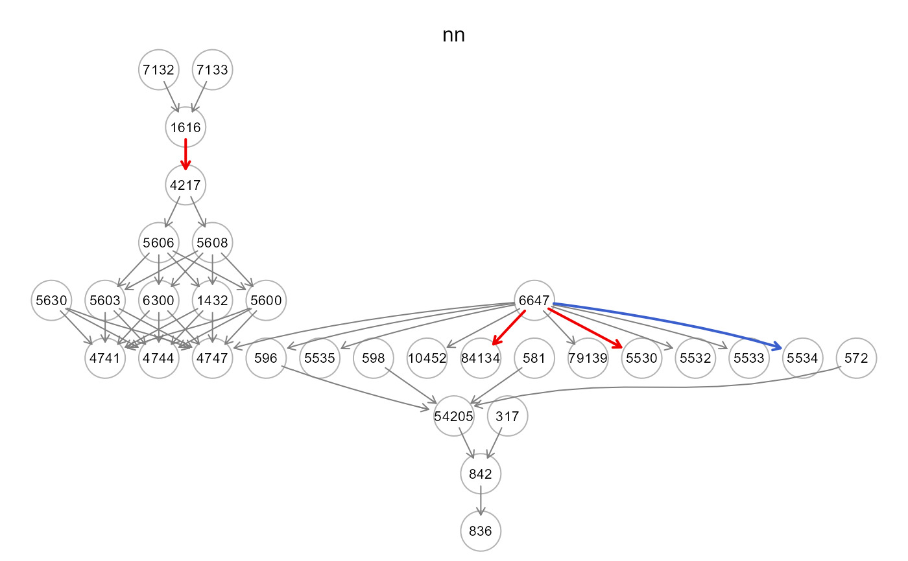
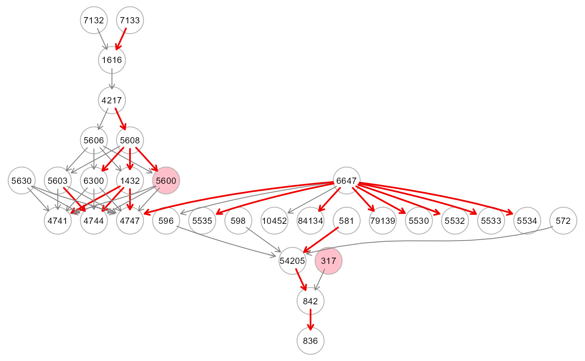

The function converts a graph to a collection of
nodewise-based models: each mediator or sink variable can be expressed as
a function of its parents. Based on the assumed type of relationship,
i.e. linear or non-linear, SEMml() fits a ML model to each
node (variable) with non-zero incoming connectivity.
The model fitting is performed equation-by equation (r=1,...,R)
times, where R is the number of mediators and sink nodes.
Usage
SEMml(
graph,
data,
outcome = NULL,
algo = "sem",
thr = NULL,
nboot = 0,
ncores = 2,
verbose = FALSE,
...
)Arguments
- graph
An igraph object.
- data
A matrix with rows corresponding to subjects, and columns to graph nodes (variables).
- outcome
A character vector (as.fctor) of labels for a categorical output (target). If NULL (default), the categorical output (target) will not be considered.
- algo
ML method used for nodewise-based predictions. Four algorithms can be specified:
- thr
A numeric value [0-1] indicating the threshold to apply to the variable importance values to color the graph. If thr = NULL (default), the threshold is set to thr = 0.5*max(abs(variable importance values)).
- nboot
number of bootstrap samples that will be used to compute cheap (lower, upper) CIs for all input variable weights. As a default, nboot = 0.
- ncores
number of cpu cores (default = 2)
- verbose
A logical value. If FALSE (default), the processed graph will not be plotted to screen.
- ...
Currently ignored.
Value
An S3 object of class "ML" is returned. It is a list of 5 objects:
"fit", a list of ML model objects, including: the estimated covariance matrix (Sigma), the estimated model errors (Psi), the fitting indices (fitIdx), and the parameterEstimates, i.e., the variable importance measures (VarImp).
"gest", the data.frame of variable importances (parameterEstimates) of outcome levels, if outcome != NULL.
"model", a list of all the fitted non-linear nodewise-based models (tree, rf, xgb, nn or dnn).
"graph", the induced DAG of the input graph mapped on data variables. The DAG with colored edge/nodes based on the variable importance measures, i.e., if abs(VarImp) > thr will be highlighted in red (VarImp > 0) or blue (VarImp < 0). If the outcome vector is given, nodes with variable importances summed over the outcome levels, i.e. sum(VarImp[outcome levels])) > thr, will be highlighted in pink.
"data", input data subset mapping graph nodes.
Using the default algo="sem", the usual output of a linear nodewise-based
SEM, see SEMrun (algo="cggm"), will be returned.
Details
By mapping data onto the input graph, SEMml() creates
a set of nodewise models based on the directed links, i.e.,
a set of edges pointing in the same direction, between two nodes
in the input graph that are causally relevant to each other.
The mediator or sink variables are defined as functions of their parents.
Then, an ML model (sem, tree, rf, xgb) can be fitted to each variable with
non-zero inbound connectivity. The model fitting process is performed
equation-by-equation (r=1,...,R) times, where R represents the number of
mediators and sink nodes in the input graph.
If boot != 0, the function will implement the cheap bootstrapping proposed by
Lam (2002) to generate uncertainties (i.e., bootstrap 90%CIs) for ML
parameters. Bootstrapping can be enabled by setting a small number (1 to 10) of
bootstrap samples. Note, however, that the computation can be time-consuming for
massive MLs, even with cheap bootstrapping!
References
Grassi M., Palluzzi F., and Tarantino B. (2022). SEMgraph: An R Package for Causal Network Analysis of High-Throughput Data with Structural Equation Models. Bioinformatics, 38 (20), 4829–4830 <https://doi.org/10.1093/bioinformatics/btac567>
Breiman L., Friedman J.H., Olshen R.A., and Stone, C.J. (1984) Classification and Regression Trees. Chapman and Hall/CRC.
Breiman L. (2001). Random Forests, Machine Learning 45(1), 5-32.
Chen T., and Guestrin C. (2016). XGBoost: A Scalable Tree Boosting System. Proceedings of the 22nd ACM SIGKDD International Conference on Knowledge Discovery and Data Mining.
Lam, H. (2022). Cheap bootstrap for input uncertainty quantification. WSC '22: Proceedings of the Winter Simulation Conference, 2318-2329.
Author
Mario Grassi mario.grassi@unipv.it
Examples
# \donttest{
# Load Amyotrophic Lateral Sclerosis (ALS)
ig<- alsData$graph
data<- alsData$exprs
data<- transformData(data)$data
#> Conducting the nonparanormal transformation via shrunkun ECDF...done.
group<- alsData$group
#...with train-test (0.5-0.5) samples
set.seed(123)
train<- sample(1:nrow(data), 0.5*nrow(data))
start<- Sys.time()
# ... tree
res1<- SEMml(ig, data[train, ], algo="tree")
#> Running SEM model via ML...
#> done.
#>
#> TREE solver ended normally after 23 iterations
#>
#> logL:-45.080145 srmr:0.201877
# ... rf
res2<- SEMml(ig, data[train, ], algo="rf")
#> Running SEM model via ML...
#> done.
#>
#> RF solver ended normally after 23 iterations
#>
#> logL:-33.16687 srmr:0.086188
# ... xgb
res3<- SEMml(ig, data[train, ], algo="xgb")
#> Running SEM model via ML...
#> done.
#>
#> XGB solver ended normally after 23 iterations
#>
#> logL:69.930993 srmr:0.001418
# ... sem
res4<- SEMml(ig, data[train, ], algo="sem")
#> Running SEM model via ML...
#> done.
#>
#> SEM solver ended normally after 23 iterations
#>
#> logL:-48.441286 srmr:0.306438
end<- Sys.time()
print(end-start)
#> Time difference of 2.769274 secs
#visualizaation of the colored dag for algo="sem"
gplot(res4$graph, l="dot", main="sem")

#Comparison of fitting indices (in train data)
res1$fit$fitIdx #tree
#> logL amse rmse srmr
#> -45.0801450 0.6403463 0.8002164 0.2018772
res2$fit$fitIdx #rf
#> logL amse rmse srmr
#> -33.16686964 0.23129978 0.48093636 0.08618768
res3$fit$fitIdx #xgb
#> logL amse rmse srmr
#> 69.930993394 0.000195125 0.013968717 0.001417510
res4$fit$fitIdx #sem
#> logL amse rmse srmr
#> -48.4412858 0.8574470 0.9259843 0.3064378
#Comparison of parameter estimates (in train data)
parameterEstimates(res1$fit) #tree
#> lhs op rhs VarImp lower upper
#> 1 10452 ~ 6647 16.112 0 0
#> 43 84134 ~ 6647 24.516 0 0
#> 38 596 ~ 6647 10.728 0 0
#> 17 4747 ~ 6647 19.529 0 0
#> 41 79139 ~ 6647 25.164 0 0
#> 27 5530 ~ 6647 27.370 0 0
#> 28 5532 ~ 6647 32.388 0 0
#> 29 5533 ~ 6647 20.453 0 0
#> 30 5534 ~ 6647 30.462 0 0
#> 31 5535 ~ 6647 25.923 0 0
#> 44 842 ~ 54205 32.106 0 0
#> 23 54205 ~ 581 35.206 0 0
#> 24 54205 ~ 572 6.647 0 0
#> 25 54205 ~ 596 6.135 0 0
#> 26 54205 ~ 598 15.418 0 0
#> 45 842 ~ 317 6.470 0 0
#> 42 836 ~ 842 28.768 0 0
#> 4 1616 ~ 7132 14.271 0 0
#> 5 1616 ~ 7133 19.620 0 0
#> 6 4217 ~ 1616 12.718 0 0
#> 36 5606 ~ 4217 11.445 0 0
#> 37 5608 ~ 4217 35.143 0 0
#> 2 1432 ~ 5606 15.674 0 0
#> 32 5600 ~ 5606 12.193 0 0
#> 34 5603 ~ 5606 14.378 0 0
#> 39 6300 ~ 5606 11.595 0 0
#> 3 1432 ~ 5608 22.355 0 0
#> 33 5600 ~ 5608 19.935 0 0
#> 35 5603 ~ 5608 13.768 0 0
#> 40 6300 ~ 5608 25.313 0 0
#> 18 4747 ~ 1432 22.556 0 0
#> 7 4741 ~ 1432 24.848 0 0
#> 12 4744 ~ 1432 19.416 0 0
#> 19 4747 ~ 5600 11.291 0 0
#> 8 4741 ~ 5600 7.237 0 0
#> 13 4744 ~ 5600 16.367 0 0
#> 20 4747 ~ 5603 13.228 0 0
#> 9 4741 ~ 5603 13.976 0 0
#> 14 4744 ~ 5603 17.849 0 0
#> 21 4747 ~ 6300 3.397 0 0
#> 10 4741 ~ 6300 2.549 0 0
#> 15 4744 ~ 6300 10.920 0 0
#> 22 4747 ~ 5630 8.191 0 0
#> 11 4741 ~ 5630 9.045 0 0
#> 16 4744 ~ 5630 10.093 0 0
parameterEstimates(res2$fit) #rf
#> lhs op rhs VarImp lower upper
#> 1 10452 ~ 6647 0.097 0 0
#> 43 84134 ~ 6647 0.445 0 0
#> 38 596 ~ 6647 0.117 0 0
#> 17 4747 ~ 6647 0.254 0 0
#> 41 79139 ~ 6647 0.665 0 0
#> 27 5530 ~ 6647 0.338 0 0
#> 28 5532 ~ 6647 0.480 0 0
#> 29 5533 ~ 6647 0.317 0 0
#> 30 5534 ~ 6647 0.502 0 0
#> 31 5535 ~ 6647 0.383 0 0
#> 44 842 ~ 54205 0.420 0 0
#> 23 54205 ~ 581 0.569 0 0
#> 24 54205 ~ 572 0.053 0 0
#> 25 54205 ~ 596 -0.009 0 0
#> 26 54205 ~ 598 0.214 0 0
#> 45 842 ~ 317 0.133 0 0
#> 42 836 ~ 842 0.479 0 0
#> 4 1616 ~ 7132 0.060 0 0
#> 5 1616 ~ 7133 0.055 0 0
#> 6 4217 ~ 1616 0.026 0 0
#> 36 5606 ~ 4217 -0.143 0 0
#> 37 5608 ~ 4217 0.697 0 0
#> 2 1432 ~ 5606 0.132 0 0
#> 32 5600 ~ 5606 -0.037 0 0
#> 34 5603 ~ 5606 0.181 0 0
#> 39 6300 ~ 5606 0.014 0 0
#> 3 1432 ~ 5608 0.456 0 0
#> 33 5600 ~ 5608 0.110 0 0
#> 35 5603 ~ 5608 0.043 0 0
#> 40 6300 ~ 5608 0.225 0 0
#> 18 4747 ~ 1432 0.086 0 0
#> 7 4741 ~ 1432 0.250 0 0
#> 12 4744 ~ 1432 0.180 0 0
#> 19 4747 ~ 5600 0.098 0 0
#> 8 4741 ~ 5600 0.093 0 0
#> 13 4744 ~ 5600 0.167 0 0
#> 20 4747 ~ 5603 0.105 0 0
#> 9 4741 ~ 5603 0.109 0 0
#> 14 4744 ~ 5603 0.085 0 0
#> 21 4747 ~ 6300 0.025 0 0
#> 10 4741 ~ 6300 -0.025 0 0
#> 15 4744 ~ 6300 0.025 0 0
#> 22 4747 ~ 5630 0.033 0 0
#> 11 4741 ~ 5630 0.050 0 0
#> 16 4744 ~ 5630 0.054 0 0
parameterEstimates(res3$fit) #xgb
#> lhs op rhs VarImp lower upper
#> 1 10452 ~ 6647 1.000 0 0
#> 43 84134 ~ 6647 1.000 0 0
#> 38 596 ~ 6647 1.000 0 0
#> 17 4747 ~ 6647 0.293 0 0
#> 41 79139 ~ 6647 1.000 0 0
#> 27 5530 ~ 6647 1.000 0 0
#> 28 5532 ~ 6647 1.000 0 0
#> 29 5533 ~ 6647 1.000 0 0
#> 30 5534 ~ 6647 1.000 0 0
#> 31 5535 ~ 6647 1.000 0 0
#> 44 842 ~ 54205 0.652 0 0
#> 23 54205 ~ 581 0.625 0 0
#> 24 54205 ~ 572 0.122 0 0
#> 25 54205 ~ 596 0.057 0 0
#> 26 54205 ~ 598 0.196 0 0
#> 45 842 ~ 317 0.348 0 0
#> 42 836 ~ 842 1.000 0 0
#> 4 1616 ~ 7132 0.436 0 0
#> 5 1616 ~ 7133 0.564 0 0
#> 6 4217 ~ 1616 1.000 0 0
#> 36 5606 ~ 4217 1.000 0 0
#> 37 5608 ~ 4217 1.000 0 0
#> 2 1432 ~ 5606 0.487 0 0
#> 32 5600 ~ 5606 0.421 0 0
#> 34 5603 ~ 5606 0.548 0 0
#> 39 6300 ~ 5606 0.407 0 0
#> 3 1432 ~ 5608 0.513 0 0
#> 33 5600 ~ 5608 0.579 0 0
#> 35 5603 ~ 5608 0.452 0 0
#> 40 6300 ~ 5608 0.593 0 0
#> 18 4747 ~ 1432 0.290 0 0
#> 7 4741 ~ 1432 0.441 0 0
#> 12 4744 ~ 1432 0.210 0 0
#> 19 4747 ~ 5600 0.071 0 0
#> 8 4741 ~ 5600 0.166 0 0
#> 13 4744 ~ 5600 0.248 0 0
#> 20 4747 ~ 5603 0.192 0 0
#> 9 4741 ~ 5603 0.223 0 0
#> 14 4744 ~ 5603 0.327 0 0
#> 21 4747 ~ 6300 0.038 0 0
#> 10 4741 ~ 6300 0.034 0 0
#> 15 4744 ~ 6300 0.049 0 0
#> 22 4747 ~ 5630 0.116 0 0
#> 11 4741 ~ 5630 0.136 0 0
#> 16 4744 ~ 5630 0.166 0 0
parameterEstimates(res4$fit) #sem
#> lhs op rhs VarImp lower upper
#> 1 10452 ~ 6647 0.411 0 0
#> 2 84134 ~ 6647 2.776 0 0
#> 8 596 ~ 6647 -0.653 0 0
#> 24 4747 ~ 6647 5.331 0 0
#> 40 79139 ~ 6647 4.441 0 0
#> 41 5530 ~ 6647 3.094 0 0
#> 42 5532 ~ 6647 4.277 0 0
#> 43 5533 ~ 6647 -2.575 0 0
#> 44 5534 ~ 6647 3.120 0 0
#> 45 5535 ~ 6647 -4.107 0 0
#> 9 842 ~ 54205 -6.545 0 0
#> 3 54205 ~ 581 -4.883 0 0
#> 4 54205 ~ 572 0.161 0 0
#> 5 54205 ~ 596 -0.284 0 0
#> 6 54205 ~ 598 -1.702 0 0
#> 10 842 ~ 317 -2.667 0 0
#> 7 836 ~ 842 -4.841 0 0
#> 11 1616 ~ 7132 1.662 0 0
#> 12 1616 ~ 7133 0.367 0 0
#> 13 4217 ~ 1616 -1.689 0 0
#> 14 5606 ~ 4217 -0.828 0 0
#> 15 5608 ~ 4217 5.921 0 0
#> 16 1432 ~ 5606 3.182 0 0
#> 18 5600 ~ 5606 1.493 0 0
#> 20 5603 ~ 5606 2.255 0 0
#> 22 6300 ~ 5606 1.168 0 0
#> 17 1432 ~ 5608 5.564 0 0
#> 19 5600 ~ 5608 -2.371 0 0
#> 21 5603 ~ 5608 0.181 0 0
#> 23 6300 ~ 5608 -3.871 0 0
#> 25 4747 ~ 1432 2.995 0 0
#> 30 4741 ~ 1432 2.889 0 0
#> 35 4744 ~ 1432 2.522 0 0
#> 26 4747 ~ 5600 0.252 0 0
#> 31 4741 ~ 5600 -0.730 0 0
#> 36 4744 ~ 5600 -0.738 0 0
#> 27 4747 ~ 5603 2.135 0 0
#> 32 4741 ~ 5603 0.870 0 0
#> 37 4744 ~ 5603 0.588 0 0
#> 28 4747 ~ 6300 1.023 0 0
#> 33 4741 ~ 6300 0.891 0 0
#> 38 4744 ~ 6300 0.572 0 0
#> 29 4747 ~ 5630 -1.275 0 0
#> 34 4741 ~ 5630 -1.892 0 0
#> 39 4744 ~ 5630 -2.107 0 0
#Comparison of VarImp (in train data)
table(E(res1$graph)$color) #tree
#>
#> gray50 red2
#> 25 20
table(E(res2$graph)$color) #rf
#>
#> gray50 red2
#> 35 10
table(E(res3$graph)$color) #xgb
#>
#> gray50 red2
#> 25 20
table(E(res4$graph)$color) #sem
#>
#> gray50 red2 royalblue3
#> 35 5 5
#Comparison of AMSE, R2, SRMR (in test data)
print(predict(res1, data[-train, ])$PE) #tree
#> amse r2 srmr
#> 0.93770362 0.06229638 0.22693793
print(predict(res2, data[-train, ])$PE) #rf
#> amse r2 srmr
#> 0.92435872 0.07564128 0.17600941
print(predict(res3, data[-train, ])$PE) #xgb
#> amse r2 srmr
#> 0.97406302 0.02593698 0.15430562
print(predict(res4, data[-train, ])$PE) #sem
#> amse r2 srmr
#> 0.8572186 0.1427814 0.2972509
#...with a categorical (as.factor) outcome
outcome <- factor(ifelse(group == 0, "control", "case")); table(outcome)
#> outcome
#> case control
#> 139 21
res5 <- SEMml(ig, data[train, ], outcome[train], algo="tree")
#> Running SEM model via ML...
#> done.
#>
#> TREE solver ended normally after 25 iterations
#>
#> logL:-48.72171 srmr:0.196861
gplot(res5$graph)

table(E(res5$graph)$color)
#>
#> gray50 red2
#> 25 20
table(V(res5$graph)$color)
#>
#> pink white
#> 2 11
pred <- predict(res5, data[-train, ], outcome[-train], verbose=TRUE)
#> amse r2 srmr
#> 0.91133182 0.08866818 0.22538176
yhat <- pred$Yhat[ ,levels(outcome)]; head(yhat)
#> case control
#> 1 0.4773726 -0.4773726
#> 2 0.4773726 -0.4773726
#> 3 0.4773726 -0.4773726
#> 4 0.4773726 -0.4773726
#> 5 0.4773726 -0.4773726
#> 6 -0.6137648 0.6137648
yobs <- outcome[-train]; head(yobs)
#> [1] case case case case case case
#> Levels: case control
classificationReport(yobs, yhat, verbose=TRUE)$stats
#> pred
#> yobs case control
#> case 57 17
#> control 2 4
#>
#> precision recall f1 accuracy mcc support
#> case 0.9661017 0.7702703 0.8571429 0.7625 0.261562 74
#> control 0.1904762 0.6666667 0.2962963 0.7625 0.261562 6
#> macro avg 0.5782889 0.7184685 0.5767196 0.7625 0.261562 80
#> weighted avg 0.9079298 0.7625000 0.8150794 0.7625 0.261562 80
#> support_prop
#> case 0.925
#> control 0.075
#> macro avg 1.000
#> weighted avg 1.000
# }